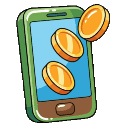

من اختيار الكتاب إلى فتحِه أمام صفّك — الطريق كلُّه في صفحةٍ واحدة.
خمس خطوات، والرمز يظهر على الشاشة في نهايتها مباشرةً.
افتحي صفحة الشراء، ثم اختاري الصفّ والمادة واضغطي «إضافة». كرّري ذلك لكل كتابٍ تريدينه.
اضغطي «تأكيد الطلب» بعد أن تكتمل سلّتك، فيظهر لك المبلغ ورقم الحساب.
المبلغ لا يظهر قبل التأكيد عمداً، حتى لا تُحوِّلي ثمن كتابٍ واحد ثم تضيفي غيره. وإن أردتِ التعديل بعدها فزرّ «تعديل الطلب» يعيد فتح السلّة ويعيد حساب المبلغ.
من تطبيق بنكك، حوّلي المبلغ المعروض إلى الحساب التالي:
تُقبل تحويلات البنوك المحلية جميعها، لا بنك مسقط وحده.

ارفعي إشعار التحويل: ملف PDF من تطبيق البنك، أو صورة للإيصال. ثم اكتبي رقم واتساب واسمك واضغطي «تحقّقي من الدفع».
رقم واتساب للتواصل معكِ إن احتاج طلبك مراجعة، والاسم للسجلّ فقط.
خلال ثوانٍ يُقرأ الإيصال ويظهر رمز الفتح أمامك — رمزٌ لكل كتابٍ في طلبك. انسخيه قبل أن تغادري الصفحة.
الطريق نفسه، لكنّه يجري في محادثةٍ واحدة ويصلك الرمز فيها.
من نافذة قفل الكتاب اضغطي زرّ واتساب، فتُفتح محادثةٌ برسالةٍ مكتوبةٍ سلفاً باسم الكتاب — أرسليها كما هي.
على السبورة أو الشاشة العريضة يظهر بدل الزرّ رمزٌ تمسحينه بكاميرا هاتفك، فينتقل الطلب إلى هاتفك أنتِ ولا تُعرَض محادثاتك أمام الصفّ.
ثلاثة ريالات عن كل كتابٍ طلبتِه، إلى الحساب نفسه:
أرسلي إشعار التحويل في المحادثة نفسها — صورةً أو ملف PDF، كلاهما مقبول.
يُقرأ الإيصال ويصلك رمز الفتح في الردّ. وإن احتاج طلبك مراجعةً يدوية وصلتك رسالةٌ تخبرك بذلك.
الرمز يفتح كتاباً واحداً بعينه. الرسالة تسمّي لك الكتاب الذي يفتحه — افتحي ذلك الكتاب وستجدينه مفتوحاً. ورمزك محفوظٌ ولم يُهدَر.
تحقّقي من تاريخ جهازك: ساعةٌ مضبوطةٌ على سنةٍ لاحقة تجعل الرمز يبدو منتهياً. اضبطي التاريخ ثم أعيدي المحاولة.
لا، الاشتراك مرتبطٌ بكِ لا بالصفّ. تشترين الكتب التي تدرّسينها، وتفتحينها بالرمز في أي جهازٍ تدخلين منه.
راسلينا على واتساب +968 7171 2937 ومعك صورة الإيصال ورقم المرجع البنكي، ويُراجَع طلبك يدوياً.
كل كتابٍ إضافيّ بعد التحويل عمليةُ شراءٍ جديدة بإيصالٍ جديد. اجمعي كتبك في سلّةٍ واحدة قبل التأكيد لتُحوّلي مرّةً واحدة.
المنصّة · شراء كتاب · سياسة الخصوصية · © ٢٠٢٦ شوجب